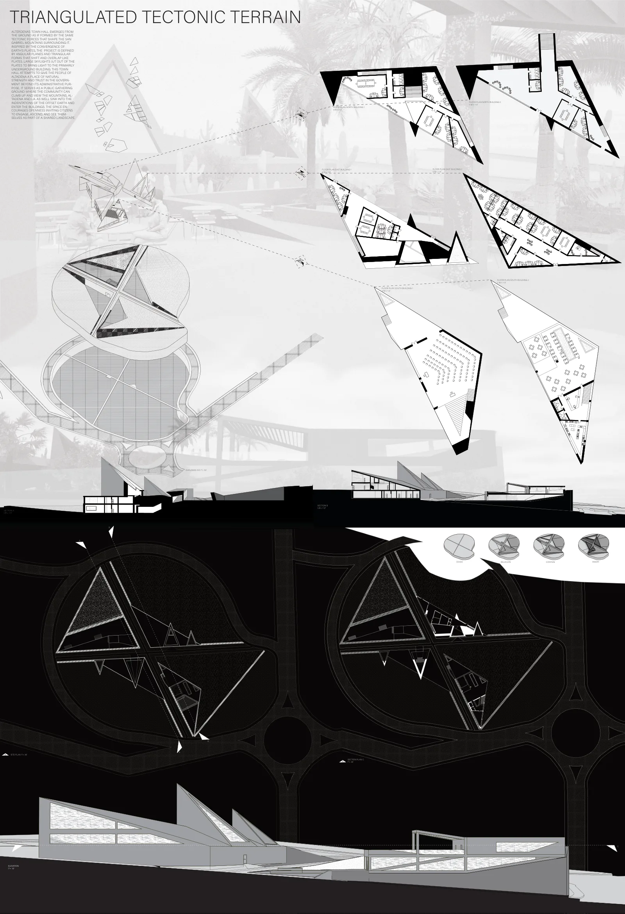
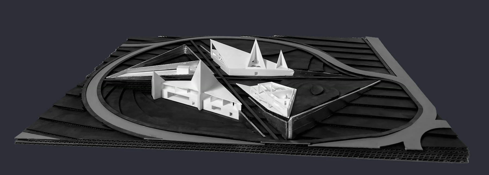
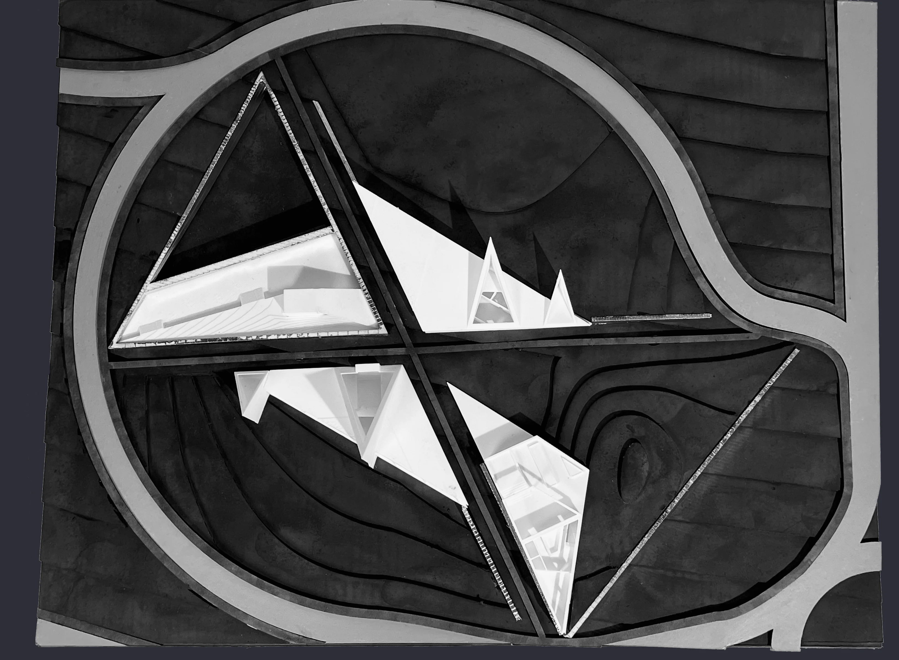
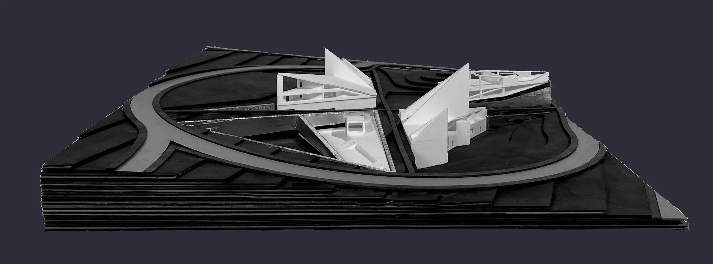
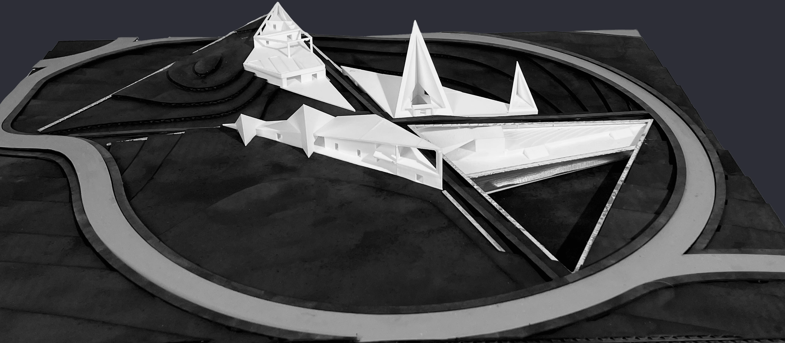

Triangulated Tectonic Design
Altadena's town hall emerges from the ground as if formed by the same tectonic forces that shape the San Gabriel Mountains surrounding it. Inspired by the convergence of earth's plates, the project is defined by angular planes and triangular forms that shift and overlap. Large skylights jut out of the plates to bring light to the primarily underground building. This town hall attempts to give the people of Altadena a place of natural strength and trust in the government. Beyond its administrative purpose, it serves as a public gathering ground where the community can climb up and view the mountains, Altadena and L.A., as well as sink into the indentations of the offset earth and enter the buildings. The space encourages openness — inviting citizens to engage, ascend, and see themselves as part of a shared landscape.



